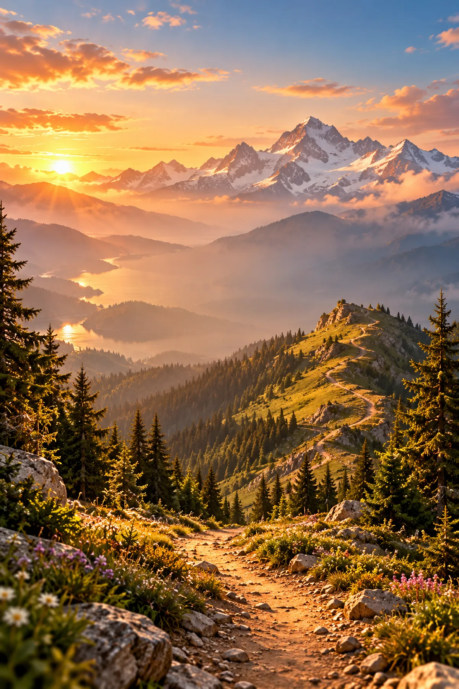
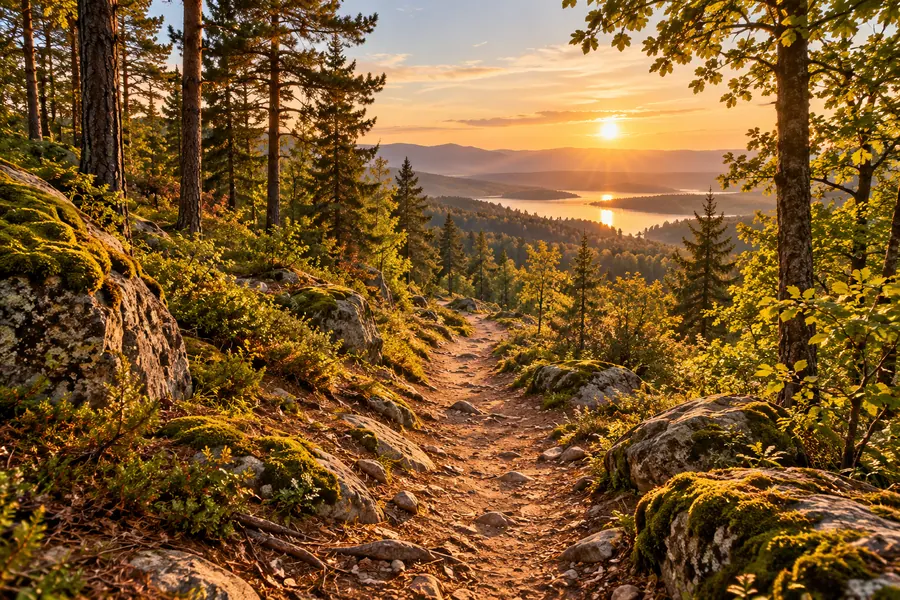
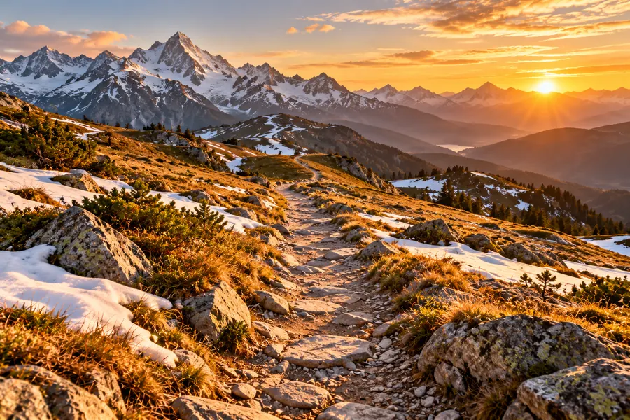
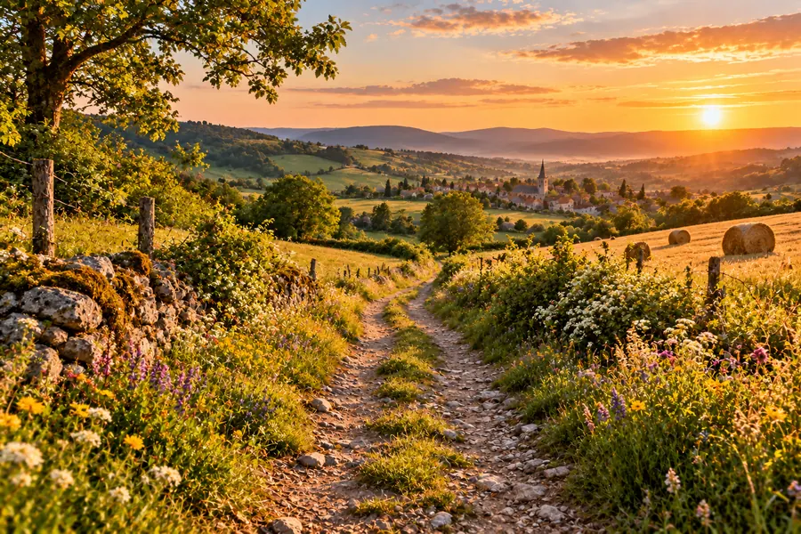
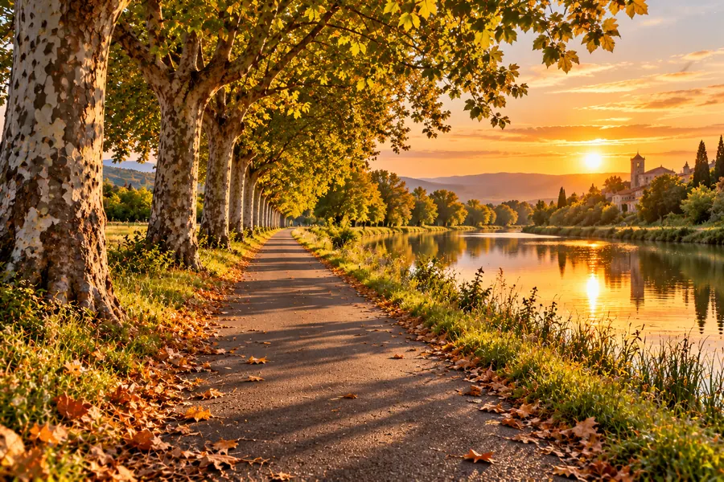
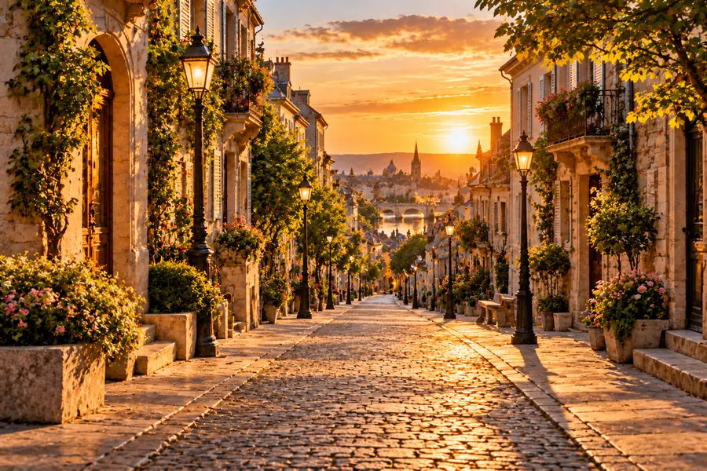
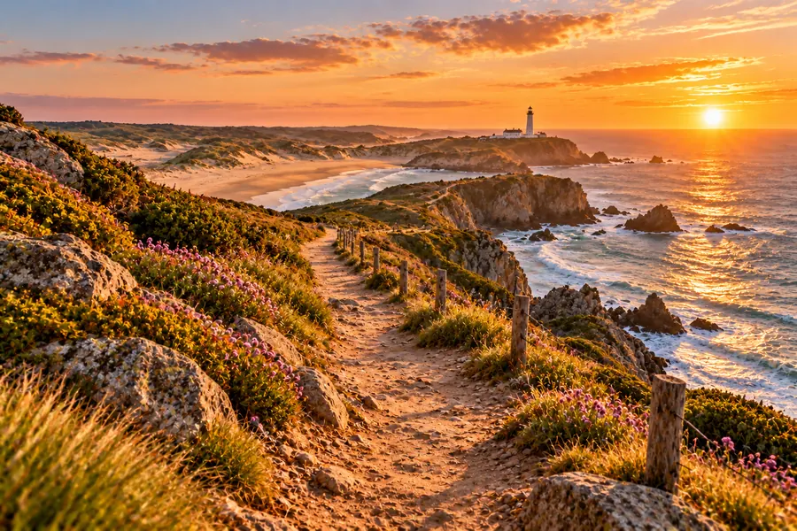
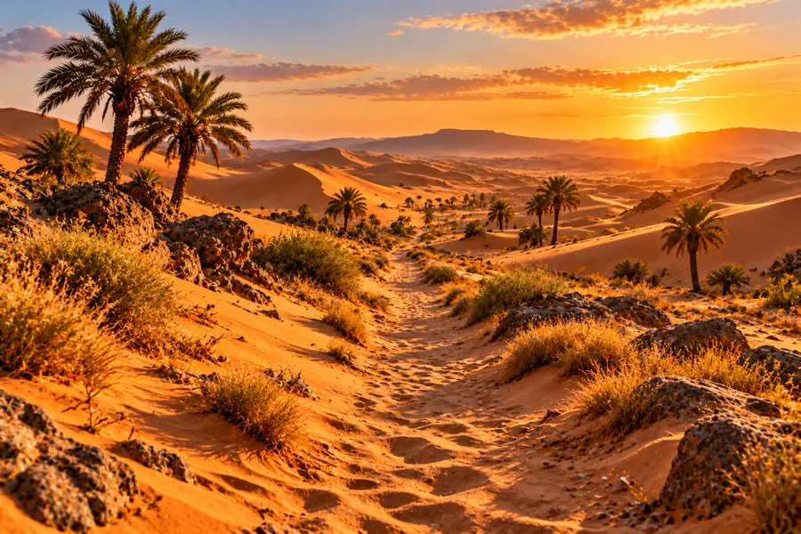
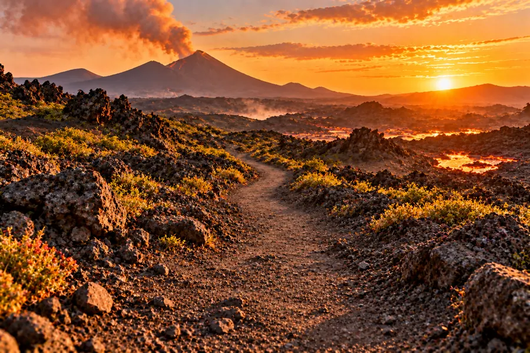

Trail to the Moon
Le jeu de course de trail sur iPhone. 8 mondes à courir, du Sentier au Volcan : saute, glisse, prends les virages et grimpe jusqu’à la Lune.
Bientôt sur l’App StoreLe jeu
Un doigt suffit : glisse à gauche ou à droite pour changer de trace, vers le haut pour sauter, vers le bas pour passer sous les branches. Aux panneaux jaunes, prends le virage, sinon c’est le ravin.
🗺️8 mondes, 160 niveauxSentier, Montagne, Campagne, Voie verte, Ville, Littoral, Désert et Volcan. Trois étoiles à gagner dans chaque niveau.
♾️Le sans finCours le plus loin possible, de la forêt aux crêtes, jusqu’à la nuit à la frontale. Ton fantôme rejoue ton record à côté de toi.
📅Le défi du jourChaque jour, le même parcours pour tout le monde, et un classement pour se comparer.
🏅Événements et médaillesUne course spéciale à chaque saison, un ultra chaque week-end et des dizaines de médailles à collectionner.
🐕Des personnages à débloquerTraileuse ou traileur, puis canicross, VTT, cheval, skate, trottinette, fat bike et dromadaire.
💪Entraînement et vestiaireEndurance, technique, mental, équipement de trail, et des dizaines de tenues pour ton personnage.
Grimpe jusqu’à la Lune
Chaque course te fait grimper des mètres : de l’Arc de Triomphe à l’Everest, puis jusqu’au ciel noir, au-dessus de 99 % de l’air.
Huit mondes

🌲 Le Sentier
🏔️ La Montagne
🐄 La Campagne
🚲 La Voie verte
🏙️ La Ville
🌊 Le Littoral
🏜️ Le Désert
🌋 Le VolcanGratuit pour commencer
- Le Sentier et ses 20 niveaux, le sans fin, le défi du jour, les événements et l’ultra du week-end sont gratuits.
- La Carrière complète (les mondes 2 à 8 et la Grande Traversée) se débloque en un seul achat.
- Ni abonnement, ni publicité, ni vies à recharger.